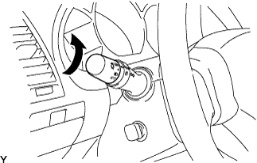

HOW TO TROUBLESHOOT ECU CONTROLLED SYSTEMS > HOW TO PROCEED WITH TROUBLESHOOTING |
| OPERATION FLOW |
| 1.VEHICLE BROUGHT TO WORKSHOP |
| |||||
| 2.CUSTOMER PROBLEM ANALYSIS |
Ask the customer about the conditions and environment when the problem occurred.
| |||||
| 3.INSPECT BATTERY VOLTAGE |
| |||||
| 4.SYMPTOM CONFIRMATION AND DTC (INCLUDING FREEZE FRAME DATA) CHECK |
Visually check the wire harnesses, connectors and fuses for open and short circuits.
Warm up the engine to the normal operating temperature.
Confirm the problem symptoms and conditions, and check for DTCs.
| Result | Proceed to |
| DTC is output | A |
| DTC is not output | B |
|
| ||||
| |||||
| 5.DTC CHART |
Check the results obtained in the DTC check. Then find the output DTC in the DTC chart. Look at the "Trouble Area" column for a list of potentially malfunctioning circuits and/or parts.
|
|
| 6.PROBLEM SYMPTOMS TABLE |
Check the results obtained in the symptom confirmation. Then find the problem symptoms in the problem symptoms table. Look at the "Suspected Area" column for a list of potentially malfunctioning circuits and/or parts.
| |||||
| 7.CIRCUIT INSPECTION OR PARTS INSPECTION |
Confirm the malfunctioning circuit or part.
| |||||
| 8.ADJUST, REPAIR OR REPLACE |
Adjust, repair or replace the malfunctioning circuit or parts.
| |||||
| 9.CONFIRMATION TEST |
After the adjustment, repairs or replacement, confirm that the malfunction no longer exists. If the malfunction does not reoccur, perform a confirmation test under the same conditions and in the same environment as when the malfunction occurred the first time.
|
| ||||
|---|---|---|---|---|---|
| CUSTOMER PROBLEM ANALYSIS |
| What | Vehicle model, system name |
| When | Date, time, occurrence frequency |
| Where | Road conditions |
| Under what conditions? | Running conditions, driving conditions, weather conditions |
| How did it happen? | Problem symptoms |
| SYMPTOM CONFIRMATION AND DIAGNOSTIC TROUBLE CODE |
| System | DTC Check (Normal Mode) | DTC Check (Check Mode) | Freeze Frame Data | Sensor Check/Test Mode (Input Signal Check) | Data List | Active Test | Customize Parameter |
| 1UR-FE SFI System | ○ | ○ | ○ | - | ○ | ○ | - |
| Cruise Control System | ○ | - | - | - | ○ | ○ | - |
| Dynamic Radar Cruise Control System | ○ | - | - | - | ○ | ○ | - |
| A760F Automatic Transmission System | ○ | ○ | ○ | - | ○ | ○ | - |
| Air Suspension System | ○ | - | - | ○ | ○ | ○ | - |
| Kinetic Dynamic Suspension System | ○ | - | - | - | ○ | ○ | - |
| Vehicle Stability Control System | ○ | - | ○ | ○ | ○ | ○ | - |
| Power Tilt and Power Telescopic Steering Column System | ○ | - | ○ | - | ○ | ○ | ○ |
| Steering Lock System | ○ | - | - | - | ○ | - | - |
| Heated Steering Wheel System | - | - | - | - | - | - | - |
| Audio and Visual System (w/ Multi-display) | ○ | - | - | - | - | - | - |
| Audio and Visual System (w/o Multi-display) | ○ | - | - | - | - | - | - |
| Rear Seat Entertainment System | ○ | - | - | - | - | - | - |
| Navigation System (for DVD) | ○ (Using display and navigation module display) | - | - | - | - | - | - |
| Navigation System (for HDD) | ○ (Using display and navigation module display) | - | - | - | - | - | - |
| G-BOOK System | ○ | - | - | - | - | - | - |
| LEXUS Parking Assist-sensor System | ○ | - | - | - | ○ | ○ | - |
| Parking Assist Monitor System | ○ | - | - | - | ○ | - | - |
| Wide View Front Monitor System | ○ | - | - | - | - | - | - |
| Side Monitor System (w/ Rear View Monitor System) | ○ | - | - | - | - | - | - |
| Side Monitor System (w/ Parking Assist Monitor System) | ○ | - | - | - | - | - | - |
| Rear View Monitor System (w/ Side Monitor System) | ○ | - | - | - | ○ | - | - |
| Rear View Monitor System (w/o Side Monitor System) | - | - | - | - | - | - | - |
| LIN Communication System | ○ | - | - | - | ○ | - | - |
| CAN Communication System | ○ | - | - | - | - | - | - |
| Power Door Lock Control System | ○ | - | - | - | ○ | ○ | ○ |
| Wireless Door Lock Control System | ○ | - | - | - | ○ | ○ | ○ |
| Entry and Start System (for Start Function) | ○ | - | - | - | ○ | ○ | ○ |
| Entry and Start System (for Entry Function) | ○ | - | - | - | ○ | ○ | ○ |
| Engine Immobiliser System | ○ | - | - | - | ○ | ○ | - |
| Theft Deterrent System | - | - | - | - | ○ | ○ | - |
| Lighting System (for Interior) | - | - | - | - | ○ | ○ | ○ |
| Meter / Gauge System | ○ | - | - | - | ○ | ○ | ○ |
| Clock System | - | - | - | - | - | - | - |
| Airbag System | ○ | ○ | - | - | ○ | - | - |
| Occupant Classification System | ○ | - | - | - | ○ | - | - |
| Pre-Crash Safety System | ○ | - | - | - | ○ | ○ | - |
| Front Power Seat Control System | ○ | - | - | - | ○ | ○ | ○ |
| Rear Power Seat Control System | - | - | - | - | - | - | - |
| Seat Heater System | - | - | - | - | - | - | - |
| Climate Control Seat System | - | - | - | - | - | - | - |
| Seat Belt Tension Reducer System | - | - | - | - | - | - | - |
| Seat Belt Warning System | - | - | - | - | ○ | ○ | ○ |
| Air Conditioning System | ○ | - | - | - | ○ | ○ | ○ |
| Power Window Control System | ○ | - | - | - | ○ | ○ | ○ |
| Windshield Deicer System | - | - | - | - | - | - | - |
| Window Defogger System | - | - | - | - | - | ○ | - |
| Glass Hatch Opener System | - | - | - | - | ○ | ○ | ○ |
| Sliding Roof System | ○ | - | - | - | ○ | ○ | ○ |
| Fuel Lid Opener System | - | - | - | - | - | - | - |
| Power Mirror Control System | - | - | - | - | ○ | ○ | - |
| Wiper and Washer System | - | - | - | - | - | ○ | - |
| Lighting System (for Exterior) | ○ | - | ○ | - | ○ | ○ | ○ |
| Horn System | - | - | - | - | - | - | - |
| 1.DTC CHECK |
| |||||
| 2.MAKE A NOTE OF DTC DISPLAYED AND THEN CLEAR MEMORY |
| |||||
| 3.SYMPTOM CONFIRMATION |
| Result | Proceed to |
| No symptoms exist | A |
| Symptoms exist | B |
|
| ||||
| |||||
| 4.SIMULATION TEST USING SYMPTOM SIMULATION METHODS |
| |||||
| 5.DTC CHECK |
| Result | Proceed to |
| DTC is not output | A |
| DTC is output | B |
|
| ||||
| |||||
| 6.SYMPTOM CONFIRMATION |
| Result | Proceed to |
| Symptoms exist | A |
| No symptoms exist | B |
|
| ||||
|
| ||||
|---|---|---|---|---|---|
| SYMPTOM SIMULATION |
VIBRATION METHOD:
When a malfunction seems to occur as a result of vibration.
PART AND SENSOR
Apply slight vibration with a finger to the part of the sensor suspected to be the cause of the problem, and check whether or not the malfunction occurs.
CONNECTORS
Slightly shake the connector vertically and horizontally.
WIRE HARNESS
Slightly shake the wire harness vertically and horizontally.
HEAT METHOD:
When a malfunction seems to occur when the area in question is heated.
Heat the component that is the possible cause of the malfunction with a hair dryer or similar device. Check if the malfunction occurs.
 |
WATER SPRINKLING METHOD:
When a malfunction seems to occur on a rainy day or in high-humidity.
Sprinkle water onto the vehicle and check if the malfunction occurs.
|  |
HIGH ELECTRICAL LOAD METHOD:
When a malfunction seems to occur when the electrical load is excessive.
Turn on the heater blower, headlights, rear window defogger and all other electrical loads. Check if the malfunction reoccurs.
| DIAGNOSTIC TROUBLE CODE CHART |
| Item | Description |
| DTC Code | Indicates the diagnostic trouble code. |
| Detection Item | Indicates the system or details of the problem. |
| Trouble Area | Indicates the suspected areas of the problem. |
| See Page | Indicates the page where the inspection procedures for each circuit can be found, or where there are instructions for checks and repairs. |
| PROBLEM SYMPTOMS TABLE |
| Item | Description |
| Symptom | - |
| Suspected Area | Indicates the circuit or part which needs to be checked. |
| See Page | Indicates the page where the flowchart for each circuit is located. |
| CIRCUIT INSPECTION |
| Item | Description |
| Circuit Description | The major role and operation of the circuit and its component parts are explained. |
| DTC Code, DTC Detection Condition, Trouble Area | Indicates the diagnostic trouble codes, diagnostic trouble code detection conditions, and trouble areas of a problem. |
| Wiring Diagram | This shows a wiring diagram of the circuit. Use this diagram together with an ELECTRICAL WIRING DIAGRAM to thoroughly understand the circuit. |
| Inspection Procedures | Use the inspection procedures to determine if the circuit is normal or abnormal. If abnormal, use the inspection procedures to determine whether the problem is located in the sensors, actuators, wire harnesses or ECU. |
| Inspection Procedure Connector Illustrations |
|